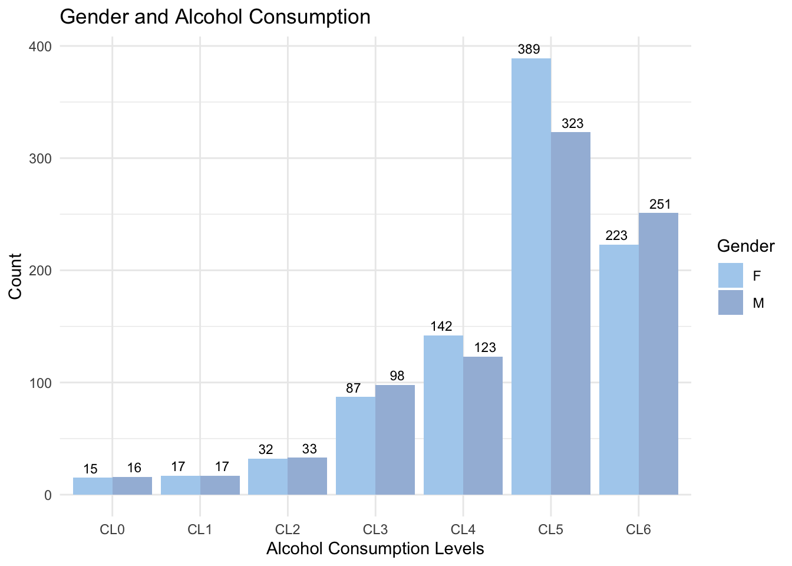
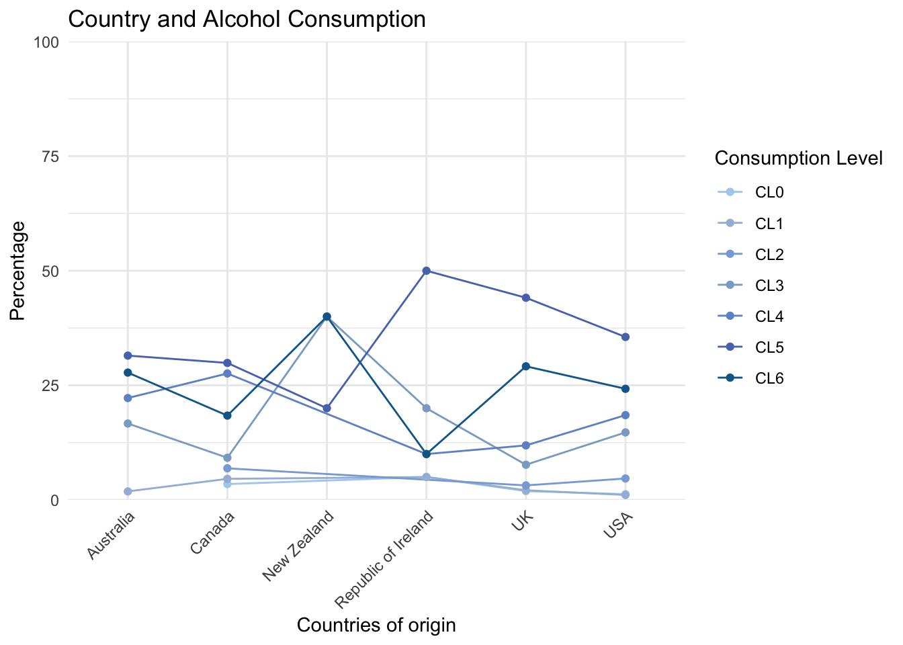
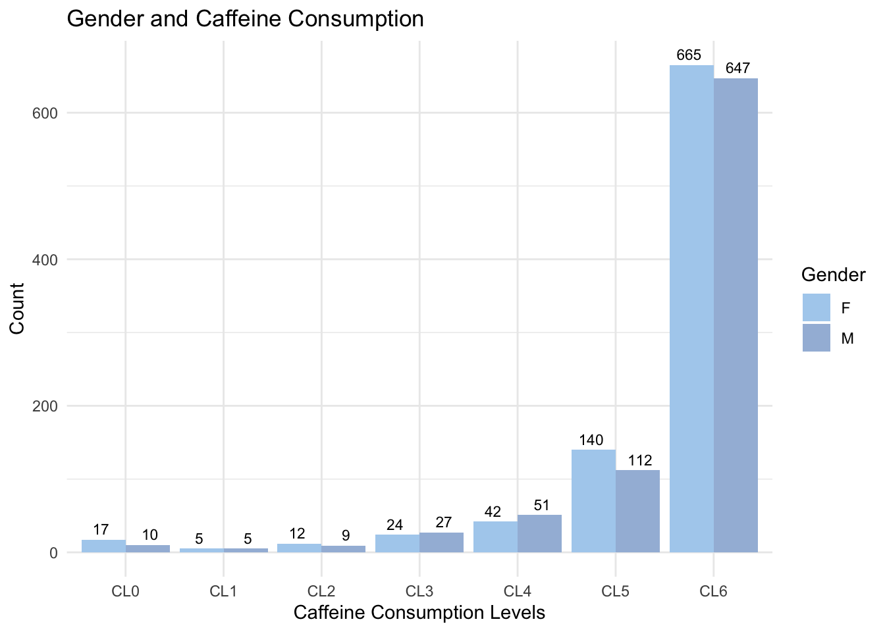
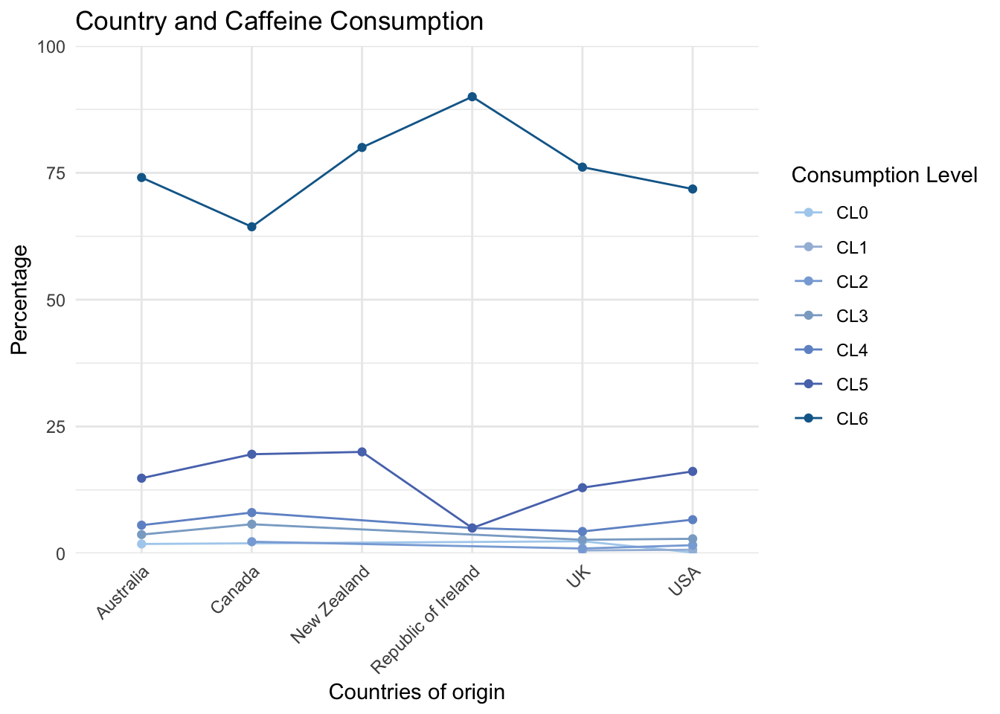
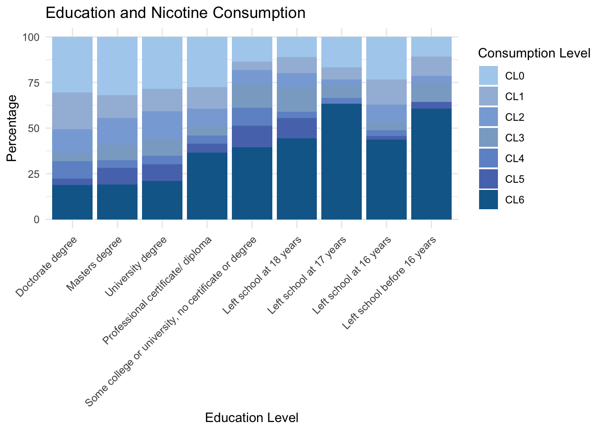
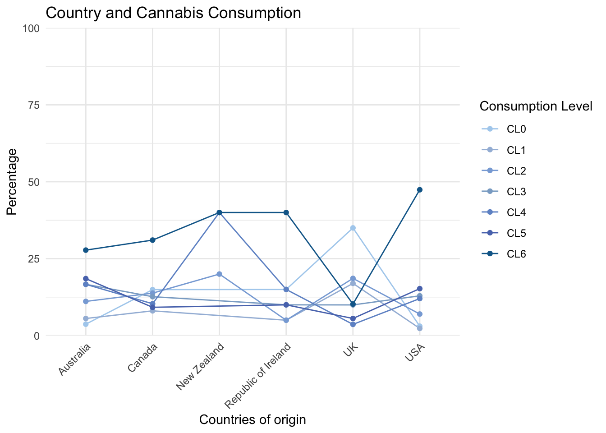
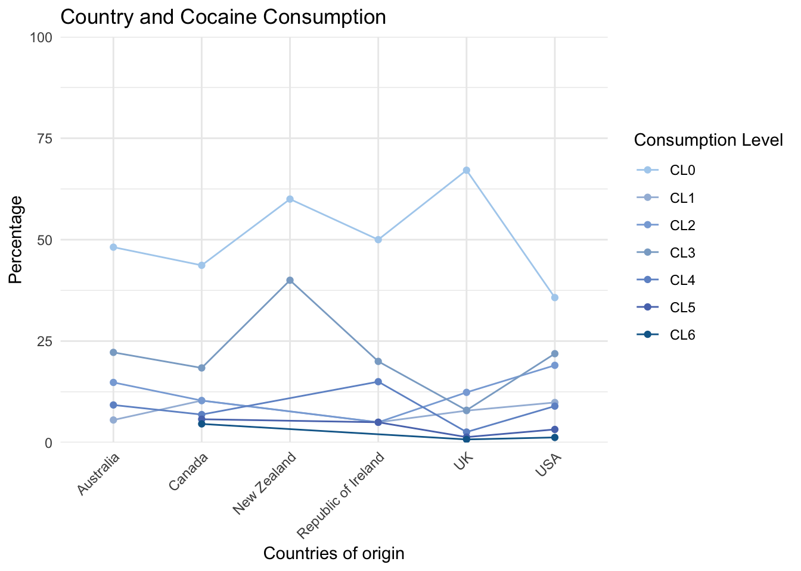
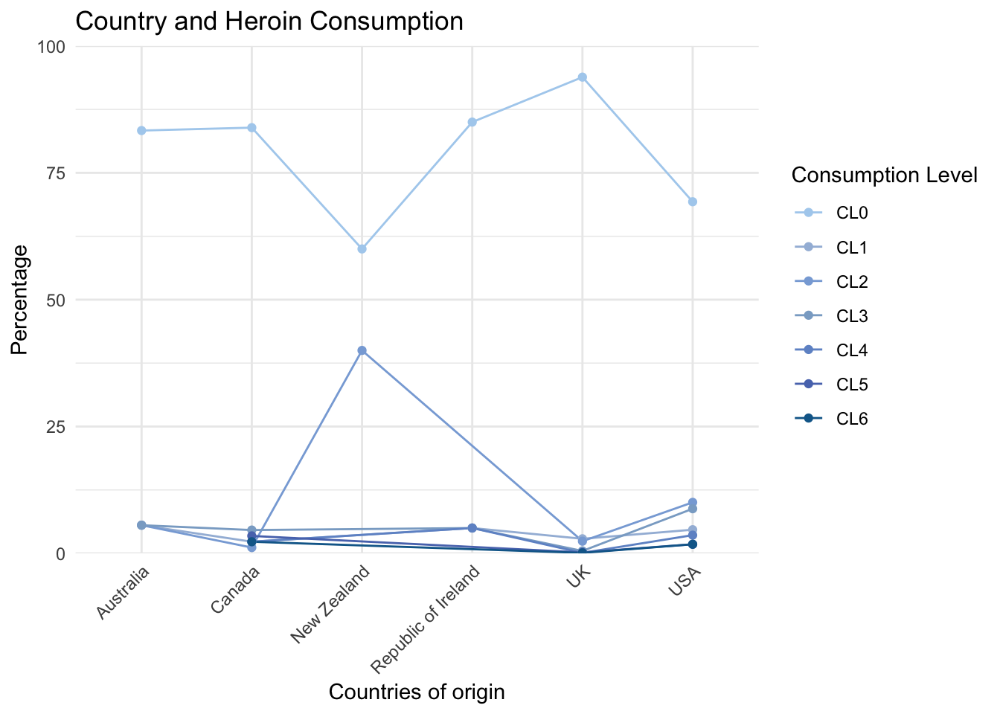

Demographic Characteristics [Univariate Analysis]
How does each demographic characteristic affect the drug consumption patterns?
This univariate analysis page will feature an analysis of four key demographic factors: Age, Gender, Education Level, and Country. The aim is to elucidate their relationship with drug consumption patterns.
For reference: CL0 indicating ‘never used’, CL1 representing ‘used over a decade ago’, CL2 indicating ‘used in the last decade’, CL3 indicating ‘used in the last year’, CL4 representing ‘used in the last month’, CL5 indicating ‘used in the last week’, and CL6 representing ‘used in the last day’.
Note: This dataset contains 1766 participants, with 905 females and 861 males.
Legal Drugs
These three drugs (alcohol, cafeeine and nocotine) are legal in all 6 analyzed countries.
Alcohol
The majority of participants consume alcohol with some regularity, with monthly (CL4), weekly (CL5), or daily (CL6) consumption being the most reported.
Younger people consume more: Younger individuals are more likely to have engaged in alcohol consumption more recently, while older age groups show a higher frequency of alcohol consumption in the more distant past, with a notable decline in recent consumption as age progresses.
Minor difference caused by gender: While overall gender differences in alcohol consumption appear minimal, there are specific points of divergence. Despite these variations, both genders display a similar pattern of alcohol consumption, with the majority having consumed alcohol at some stage and only a small proportion never having consumed alcohol at all.
Minor difference caused by educational background: The data suggests that alcohol consumption patterns, especially at higher consumption levels (such as CL4 and CL5), do not differ significantly across different educational levels.
Minor difference caused by country: Alcohol consumption is a widespread phenomenon with similar levels of engagement across the countries surveyed, pointing to the absence of notable distinctions in alcohol consumption habits based on country.
Age
There is an observable overall decline in alcohol consumption as age increases. The proportion of individuals who have never consumed alcohol (CL0) diminishes with advancing age. The peak occurrence for those who last consumed alcohol over a decade ago (CL1) is found within the 45-54 age bracket. The age group most likely to have consumed alcohol in the last decade (CL2) is 35-44. For more recent consumption categories—consumed in the last year (CL3), last month (CL4), last week (CL5), and last day (CL6)—the majority are in the youngest age group, 18-24.
Gender
A smaller portion of the surveyed population, 16.68% of females and 19.05% of males, includes individuals who have never consumed alcohol (CL0) or those who last consumed alcohol up to a year ago (CL3). The overall data suggests that the difference in alcohol consumption patterns between genders is negligible. The largest observed difference is in the weekly consumption category (CL5), where 42.98% of females and 37.51% of males reported consumption, yet this difference is not considered significant.

Education
The graph illustrates minimal variations in alcohol consumption across different educational levels. While there is a slight trend suggesting higher alcohol consumption among individuals with higher educational backgrounds, the differences are not significant.

Country

Caffeine
Younger people consume more: Younger adults exhibiting more frequent usage. This trend suggests that caffeine consumption may decrease as individuals age, particularly after passing the 55-year mark.
Minor gender difference: Both males and females exhibit similar patterns of caffeine consumption, with both genders showing a high level of caffeine intake. There is no significant gender difference influencing the frequency of caffeine consumption.
Age
The data suggests that weekly (CL5) and daily (CL6) caffeine consumption is predominantly observed in the younger age brackets, specifically those aged 18-24 and 25-34. There is a noticeable decline in caffeine consumption among individuals in the 55-64 age group. Furthermore, the peak of caffeine consumption ‘over a decade ago’ (CL1) is most evident in the 35-44 age category, which aligns with the finding that caffeine consumption is most prevalent among those currently in the 18-24 and 25-34 age groups.
Gender
The majority of surveyed individuals consume caffeine either on a daily basis (CL6), with 24.64% female and 29.15% male respondents, or on a weekly basis (CL5), with 42.98% females and 37.51% males. However, the gender difference in caffeine consumption frequency is not significantly pronounced.

Education

Country

Nicotine
Age
Gender

Education

Country

Controversial Drugs
This drug (cannabis) is legal in two analyzed countries (the United States and Canada) but illegal in four others.
Cannabis
Age
Gender
Education

Country

Illegal Drugs
These two drugs (Cocaine, Heroin) are illegal across all six analyzed countries.
Cocaine
Age
Gender

Education

Country

Heroin
Age
Gender

Education
Country
